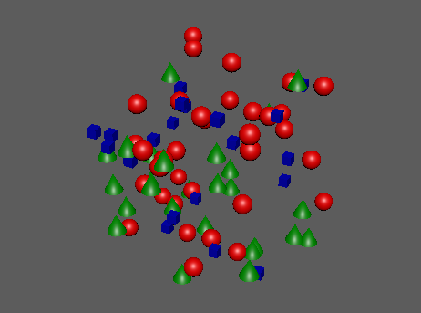

ID

用于将不同的对象指定给 MASH 点。
注：
应添加到实例化器的 ID 通道。
ID 节点(ID Node)
ID 类型(ID Type)
ID 分布的类型。选项包括：
线性(Linear)
：每个对象的 ID 按 1 递增。如果没有足够的对象，则循环。
随机(Random)
：每个对象均获得一个随机 ID。您可以使用
“概率渐变”(Probability Ramp)
调整特定 ID 相对于其他 ID 的显示概率。
循环(Cycle)
：ID 按帧递增。
固定(Fixed)
：每个 ID 均相同。
ID 数(ID Count)
指定要发出多少个对象 ID。默认情况下，此选项基于 ID 类型自动设置，但您可以单击鼠标右键并断开连接进行手动设置。
随机种子(Random Seed)
“ID 类型”(ID Type)
设置为
“随机”(Random)
时，会更改随机化。
固定 ID(Fixed ID)
“ID 类型”(ID Type)
设置为
“固定”(Fixed)
时，会设置特定 ID 号。
循环选项(Cycle Options)
循环类型(Loop Type)
确定每个对象上的动画如何循环。选项包括：
法线(Normal)
：ID 的动画将循环。
“结束时停止”(Stop At End)
：每个 ID 的动画将在对所有对象运行了循环时停止。
往返(Oscillate)
：ID 的动画将在到达序列末尾时反转。
随机化循环开始点(Randomize Cycle Start Points)
错开动画开始点。当
“ID 类型”(ID Type)
设置为
“随机”(Random)
时不起作用。
循环间隔(Cycle Gap)
“ID 类型”(ID Type)
设置为
“随机”(Random)
时，会更改随机化。
随机开始限制(Random Start Limit)
开始循环的第一个对象和最后一个对象之间的最大帧数。
时间比例(Time Scale)
当前
“时间”(Time)
的倍增。使用此选项可以根据当前
“时间”(Time)
精细调整计算。
时间(Time)
显示循环计算中使用的当前帧。
使用概率(Use Probability)
启用此项可控制在
“ID 类型”(ID Type)
设置为
“随机”(Random)
时为点指定特定 ID 的可能性。概率通过
“概率渐变”(Probability Ramp)
进行控制。如果禁用此项，则所有点被指定任意 ID 的机会均等。
强度(Strength)
强度(Strength)
同时减弱对所有点的节点效果。
随机强度(Random Strength)
按随机顺序平滑地减弱所有点的节点效果。
步骤强度(Step Strength)
每次禁用一个点的节点效果。
强度贴图(Strength Map)
确定输入文件（2D 纹理、动画纹理等）来控制该节点的效果的形状。
贴图投影轴(Map Projection Axis)
确定投影
“强度贴图”(Strength Map)
时所沿的轴。
贴图辅助对象(Map Helper)
显示用于在场景中交互放置
“强度贴图”(Strength Map)
的对象。可以在该字段上单击鼠标右键来创建新的辅助对象（平面）（如果不存在）。还可以使用鼠标中键将网格拖入此字段，或者单击鼠标右键连接选定网格。如果网格已连接，还可以单击鼠标右键来断开其连接或者将其显示在大纲视图中。
注：
为获得最佳结果，请为
“强度贴图”(Strength Map)
和
“贴图辅助对象”(Map Helper)
指定相同纹理（在创建新的辅助对象时将自动执行此操作）。
父主题：
MASH 节点概述